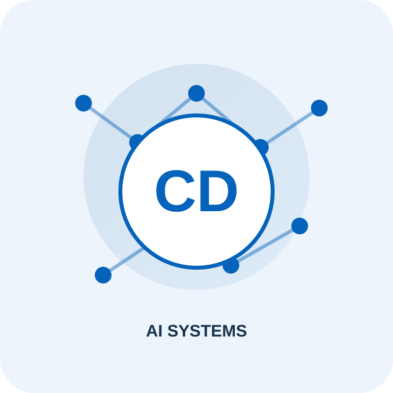
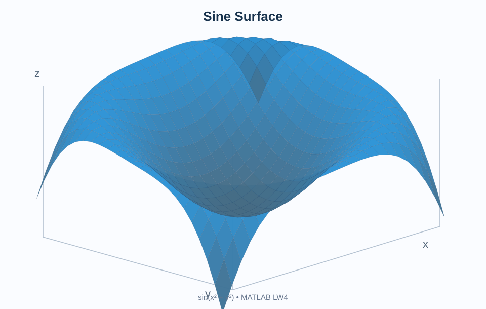
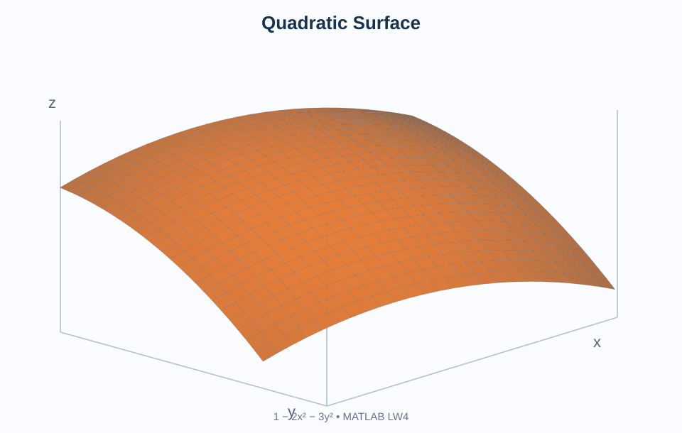
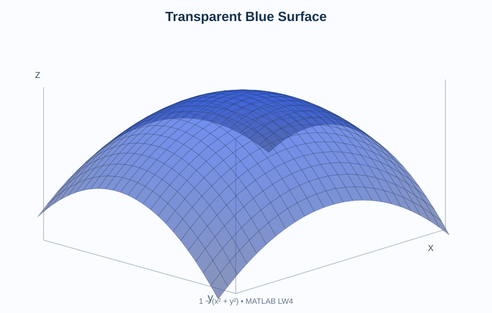

MATLAB
Scripts, matrices, plotting and laboratory assignments.
Personal CV
AI Systems Student · Junior Business Analyst · Web & Project Leader
About Me
I study Artificial Intelligence Systems at VILNIUS TECH and work on business analysis, web projects, automation and data-driven problem solving.
I enjoy turning technical requirements into practical solutions and combining analysis with hands-on development. My goal is to strengthen my software engineering and AI skills through real-world projects.
Scripts, matrices, plotting and laboratory assignments.
Procedural programming and data structures.
Semantic page structure and basic front-end development.
Requirements, research, reporting and process improvement.
My education and practical experience in technology and business.
Artificial Intelligence Systems
Studying programming, algorithms, data structures, engineering and artificial intelligence.
Triarii Growth
Coordinating web development tasks and project workflows, aligning responsibilities and monitoring progress.
Triarii Growth
Supported research, reports, requirements and business processes before moving into web and project responsibilities.
Visualizations recreated from my completed MATLAB Laboratory Work 4.

A three-dimensional representation of f(x,y) = sin(x² + y²), using a surface grid and a 50-degree viewing angle.

A surface plot of f(x,y) = 1 − 2x² − 3y², with a domain from −2 to 1 and a 60-degree viewing angle.

A semi-transparent blue surface of z = 1 − (x² + y²), based on the LW4 complementary exercise.
Example project services and illustrative prices for this CV exercise.
| Service | Description | Price |
|---|---|---|
| Website Development | Creation of simple responsive personal websites. | EUR 100 |
| Data Visualization | Creating charts and visual summaries using MATLAB. | EUR 60 |
| Process Analysis | Reviewing basic workflows and preparing a short report. | EUR 80 |
Examples of HTML media tags used in this laboratory.
Quartz clock ticking (one minute)